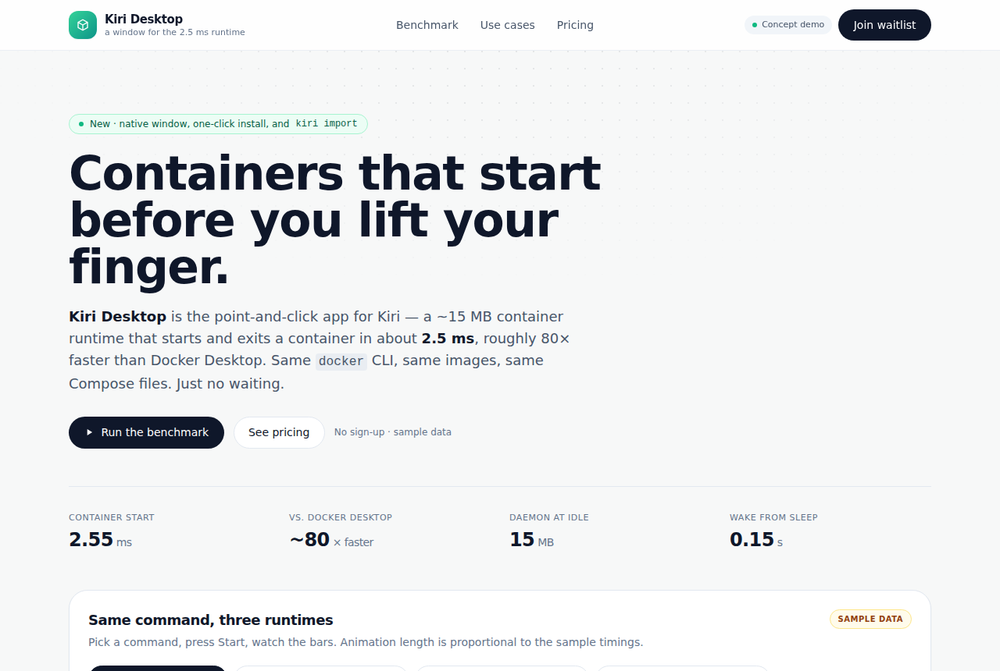

Kiri: a tiny Docker Desktop replacement in Rust
libracoder/kiri · Dev toolsApache-2.0⭐ 1,126

Kiri is a small container runtime for macOS, Windows and Linux, written in Rust by libracoder. It runs your Docker images in a single lightweight Linux VM and speaks the Docker Engine API, so the docker CLI, Compose and buildx you already use keep working. On first launch it registers a kiri Docker context and can import images, volumes and containers from OrbStack or Docker Desktop.
It's getting attention for two reasons. First, the numbers: per the README's own benchmarks, alpine true starts and exits in about 2.55 ms through the Docker Engine API versus 213 ms on Docker Desktop and 380 ms on OrbStack. The VM sleeps after 60 seconds idle, the daemon idles around 15 MB, and it wakes in about 0.15 s. Second, scope: beyond containers it offers kiri k8s start for a single-node Kubernetes cluster, kiri machine for Linux VMs, and local *.kiri.local domains with its own CA.
Where the product opportunity is: Kiri already ships a native window and menu bar item, but most developers still want a guided first-run, a clear migration path off Docker Desktop, and a reason to trust a new runtime with their daily workflow. That's less about repackaging the runtime and more about onboarding, migration guarantees and support. The benchmark gap is the hook, but the real sell is compatibility you don't have to think about.
Today's top 5
| # | Repo | Buzz | Startup | Overall |
|---|---|---|---|---|
| 1 | libracoder/kiri | 7.67 | 7.15 | 7.34 |
| 2 | blader/humanizer | 8.33 | 7.7 | 7.26 |
| 3 | pingdotgg/t3code | 7.67 | 5.65 | 7.06 |
| 4 | sarpstar/cinecode | 9.0 | 7.1 | 7.06 |
| 5 | LNPANDY/NX2Apple | 8.67 | 6.4 | 7.01 |